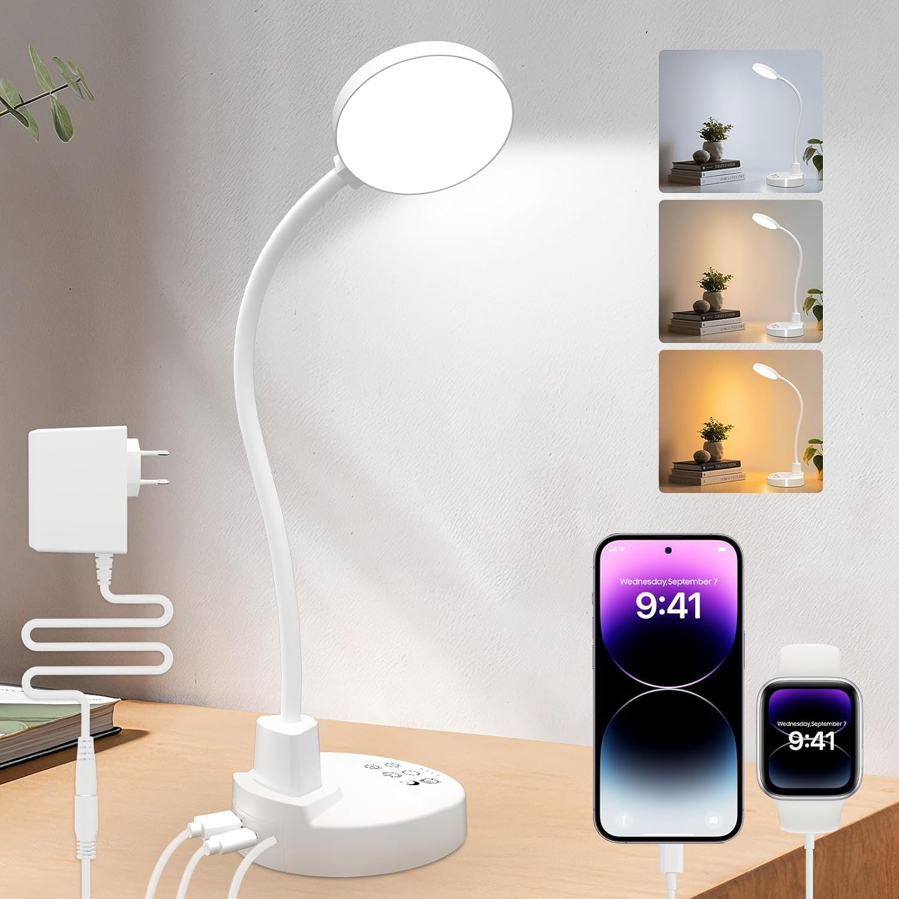
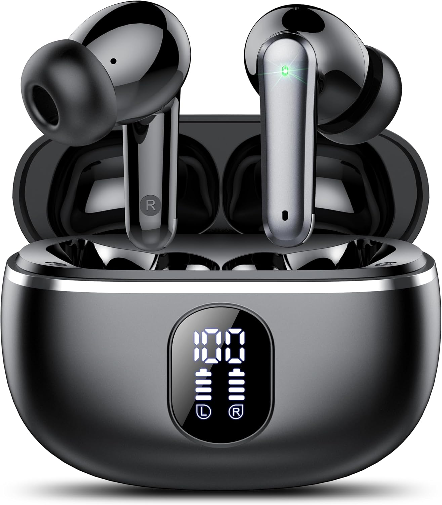
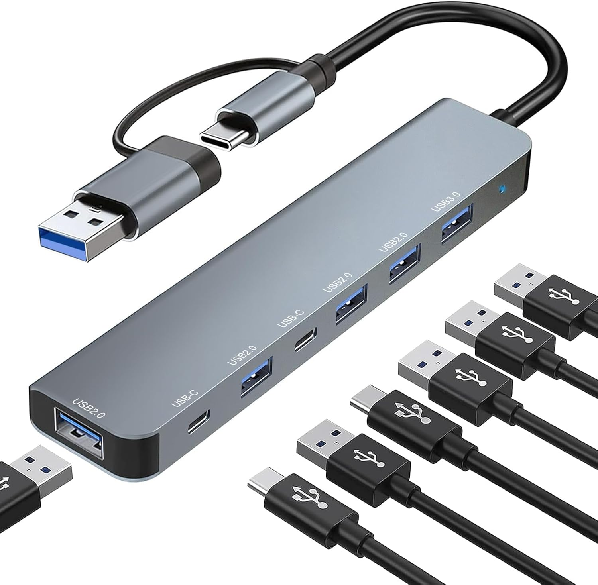
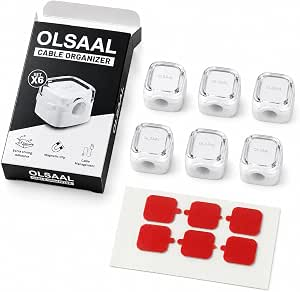

Accesorios para estudiar y trabajar mejor
Cuatro accesorios que pueden ayudarte a organizar tu espacio de estudio o trabajo. La mejor compra depende de lo que necesites: no hace falta comprarlo todo.
Actualizado: octubre de 2026 · Guía orientativa, no una prueba de laboratorio.
Los cuatro accesorios
Antes de comprar, revisa en Amazon el precio actual, las medidas, las conexiones compatibles, las características exactas y las opiniones recientes. Los precios y la disponibilidad pueden cambiar.

Lámpara de escritorio
Puede ser útil si estudias o trabajas con poca luz o si la iluminación de la habitación no llega bien a la mesa.
- Ventaja: permite añadir luz en la zona de trabajo.
- Comprueba: altura, estabilidad, tipo de alimentación y si permite ajustar la orientación o intensidad.
- Ten en cuenta: no sustituye una iluminación general adecuada.

Auriculares
Pueden ayudar a escuchar clases, reuniones o música sin molestar a otras personas. El resultado depende del ajuste y del tipo de auricular.
- Ventaja: permiten escuchar audio de forma más privada.
- Comprueba: conexión, comodidad, autonomía si son inalámbricos y compatibilidad con tu dispositivo.
- Ten en cuenta: no todos aíslan el ruido exterior; revisa la descripción del modelo.

Hub USB
Puede venir bien si tu ordenador tiene pocos puertos y necesitas conectar varios accesorios, como un ratón, una memoria o un teclado.
- Ventaja: reúne varios puertos en un solo accesorio.
- Comprueba: tipo de conector, número y tipo de puertos, velocidad y requisitos de alimentación.
- Ten en cuenta: un hub no añade funciones que tu ordenador o sus puertos no admitan.

Organizador de cables
Una solución sencilla si los cables del cargador, monitor o periféricos se mezclan encima o debajo de la mesa.
- Ventaja: ayuda a mantener los cables agrupados y más fáciles de localizar.
- Comprueba: medidas, forma de fijación y grosor de los cables que admite.
- Ten en cuenta: no todos los organizadores sirven para todos los escritorios o tipos de cable.
Comparación rápida
| Accesorio | Te puede convenir si… | Qué revisar antes de comprar |
|---|---|---|
| Lámpara | La mesa tiene poca luz. | Altura, estabilidad, alimentación y ajustes. |
| Auriculares | Escuchas clases, llamadas o audio. | Comodidad, conexión, autonomía y aislamiento real. |
| Hub USB | Te faltan puertos para tus dispositivos. | Conector, puertos, velocidad y alimentación. |
| Organizador de cables | Quieres reducir el desorden de los cables. | Medidas, fijación y grosor de los cables. |
Cómo elegir sin gastar de más
1. Empieza por el problema
Elige solo el accesorio que resuelva una necesidad que tengas ahora. No necesitas comprar los cuatro.
2. Comprueba la compatibilidad
Lee la ficha del producto y confirma que sirve para tu mesa, ordenador, móvil o forma de trabajar.
3. Mira el coste completo
Compara el precio final, los gastos de envío, las condiciones de devolución y las opiniones recientes.